양산 북부동 상가청소
양산 북부동에 위치한 상가에서 전면 유리창과 출입문, 창틀 프레임, 실내 바닥을 중심으로 청소를 진행했습니다. 상가 전면은 외부에서 바로 보이는 공간이라 유리 얼룩과 프레임 먼지, 바닥 잔여물이 함께 남아 있으면 전체 인상이 흐려집니다. 이번 현장은 유리와 바닥을 따로 보지 않고 입구부터 실내까지 한 번에 정리하는 방식으로 작업했습니다.
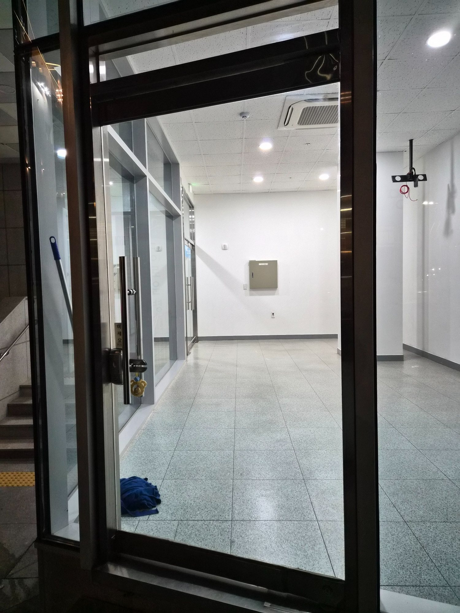
상가청소는 유리와 바닥의 마감이 중요합니다
전면 유리가 넓은 상가는 유리 자국이 곧 매장 첫인상으로 이어지고, 빈 공간이나 입점 준비 상가는 바닥의 먼지와 작은 잔여물이 특히 잘 보입니다. 퍼펙트케어는 유리면, 프레임, 출입구, 바닥을 구역별로 확인해 한쪽만 깨끗하고 다른 부분이 남지 않도록 전체 마감을 맞춥니다.
청소 전 상태
유리면에는 손자국과 닦임 자국이 남아 있었고, 창틀과 프레임 하부에는 먼지와 작은 잔여물이 누적되어 있었습니다. 실내 바닥에도 미세먼지와 작업 흔적이 보여 유리와 바닥을 함께 집중 관리했습니다.
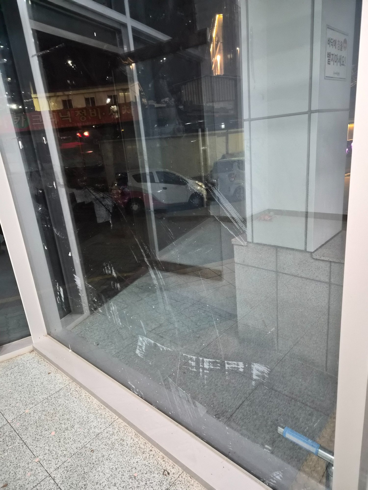
유리면에 남은 손자국과 작업 흔적
상가 전면 유리는 외부에서 가장 먼저 보이는 부분이라 작은 얼룩도 눈에 잘 띕니다. 작업 전에는 유리면 전체에 손자국과 닦임 자국, 미세먼지가 겹쳐 투명도가 떨어진 상태였습니다. 먼저 오염 범위를 확인하고 넓은 면과 모서리를 나눠 작업했습니다.
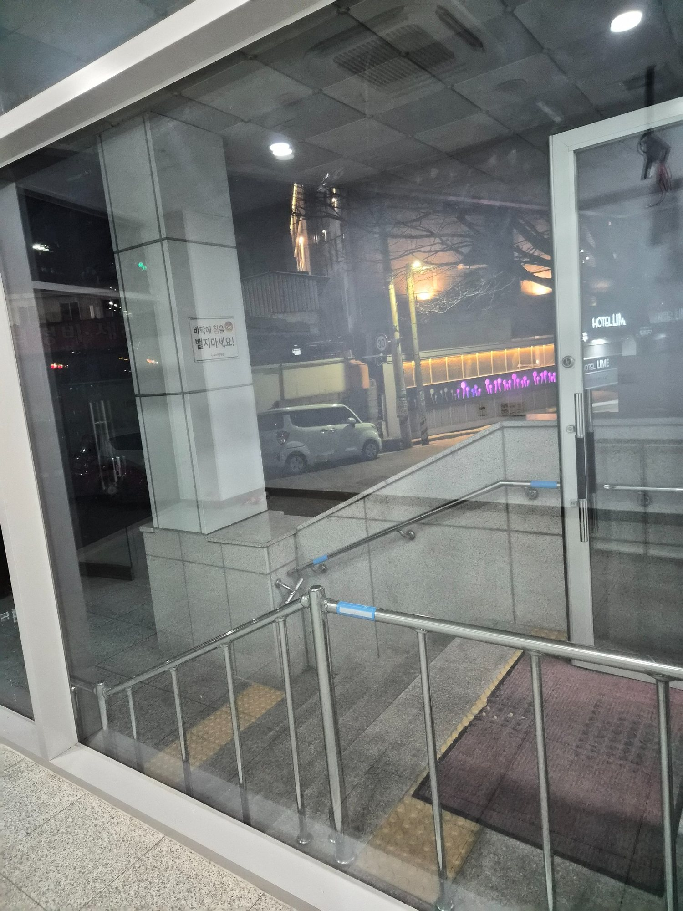
야간 조명에서 더 두드러지는 유리 오염
실내외 조명이 켜진 상태에서는 유리 표면의 얼룩과 물자국이 더욱 선명하게 보입니다. 특히 상가 출입구와 전면창은 고객 시선이 오래 머무는 공간이라 면 전체의 균일한 마감이 중요합니다. 부분적으로만 닦지 않고 연결된 유리면을 함께 확인했습니다.
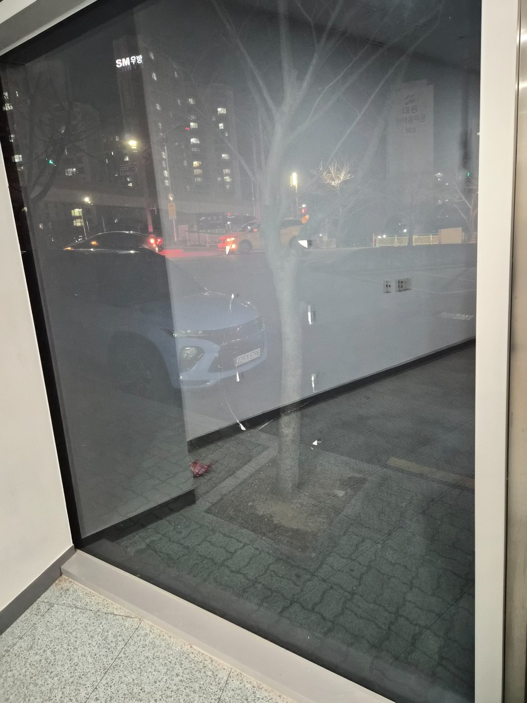
출입문과 고정창의 생활오염
출입문은 손이 자주 닿아 손자국과 유분 오염이 쉽게 남습니다. 고정창과 문 주변 프레임에도 먼지가 붙어 있어 유리만 닦아서는 전체가 깔끔해 보이지 않습니다. 유리, 손잡이 주변, 프레임을 한 구역으로 묶어 정리했습니다.
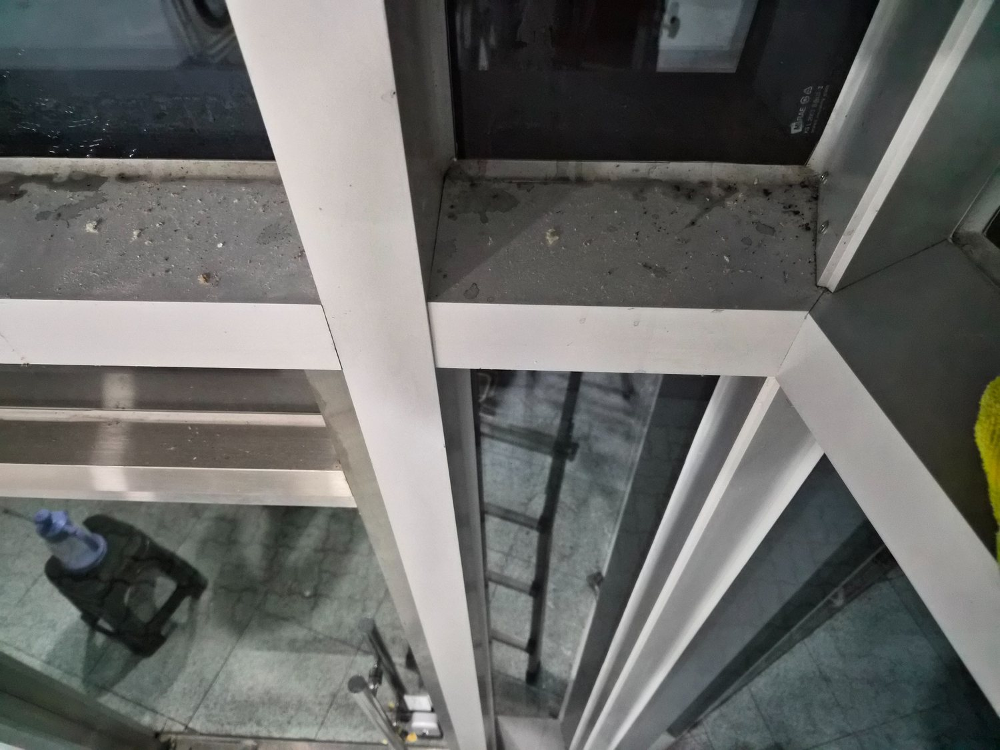
창틀 하부에 쌓인 먼지와 잔여물
창틀 하부와 프레임 안쪽에는 평소 청소에서 놓치기 쉬운 먼지와 작은 잔여물이 모여 있었습니다. 이런 부분은 물기가 닿으면 검은 때처럼 번져 보일 수 있어 마른 이물질을 먼저 제거한 뒤 세정하는 순서가 필요합니다.
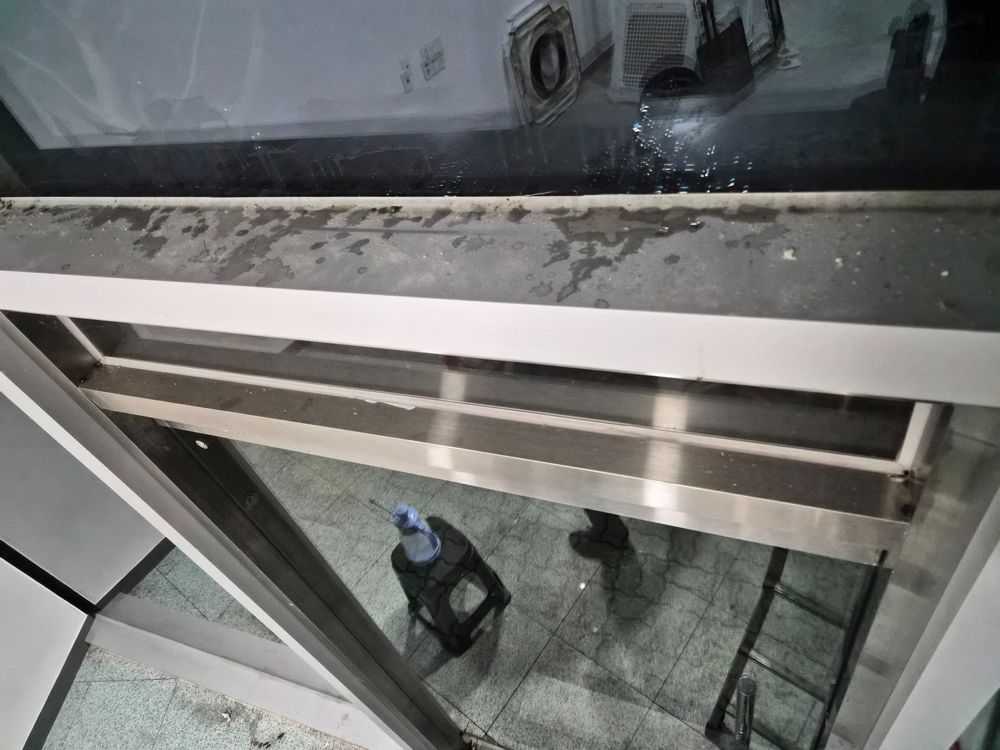
프레임 틈과 레일 주변 집중관리
알루미늄 프레임과 레일의 모서리는 좁고 단차가 있어 오염이 쉽게 남습니다. 유리면이 깨끗해도 프레임에 얼룩이 남아 있으면 전체 마감도가 떨어지기 때문에 틈과 가장자리까지 함께 정리했습니다.
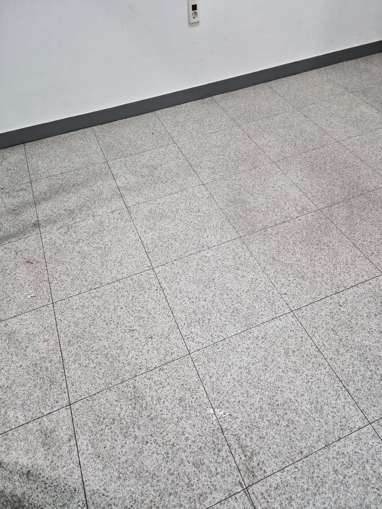
바닥에 남은 먼지와 작업 잔여물
실내 바닥에는 미세먼지와 작은 잔여물이 흩어져 있었습니다. 넓은 바닥은 먼저 이물질을 회수한 뒤 오염 정도에 맞춰 습식으로 정리해야 자국이 덜 남습니다. 벽 모서리와 출입구 주변까지 이어서 관리했습니다.
작업 후 마감
유리면과 프레임을 정리한 뒤 바닥 전체를 확인해 출입구부터 안쪽까지 깔끔하게 마무리했습니다. 작업 후에는 야간 조명과 외부 반사를 기준으로 유리 자국을 다시 확인하고, 바닥 모서리와 프레임 하부에 남은 잔여물이 없는지 점검했습니다.
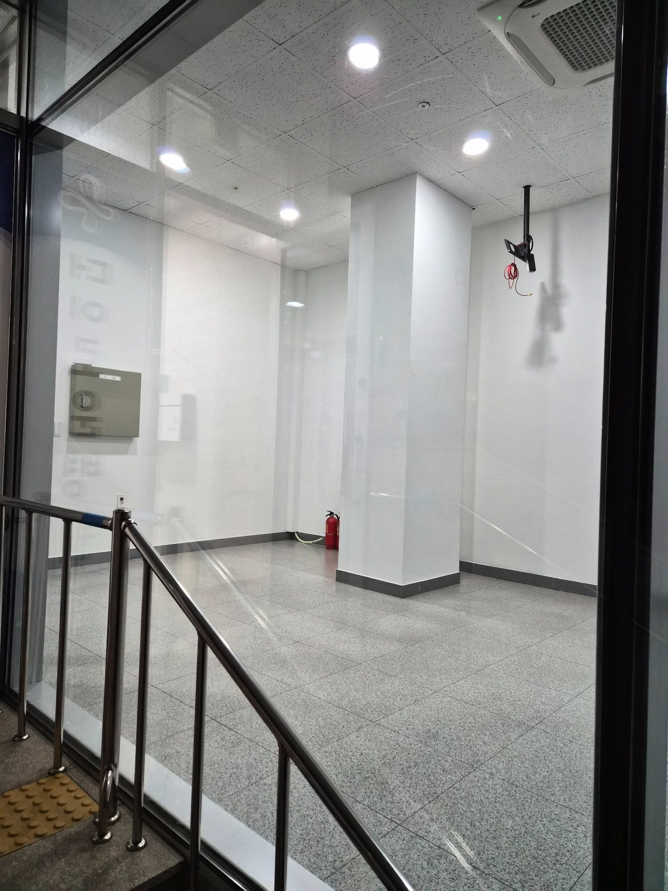
유리와 바닥을 함께 정리한 후
청소가 진행되면서 실내 바닥과 전면 유리의 탁한 느낌이 줄어들었습니다. 넓은 면이 정돈되면 조명이 고르게 반사되어 공간 자체가 훨씬 밝아 보입니다. 작업 도구와 잔여물을 순차적으로 정리하며 마감 상태를 확인했습니다.
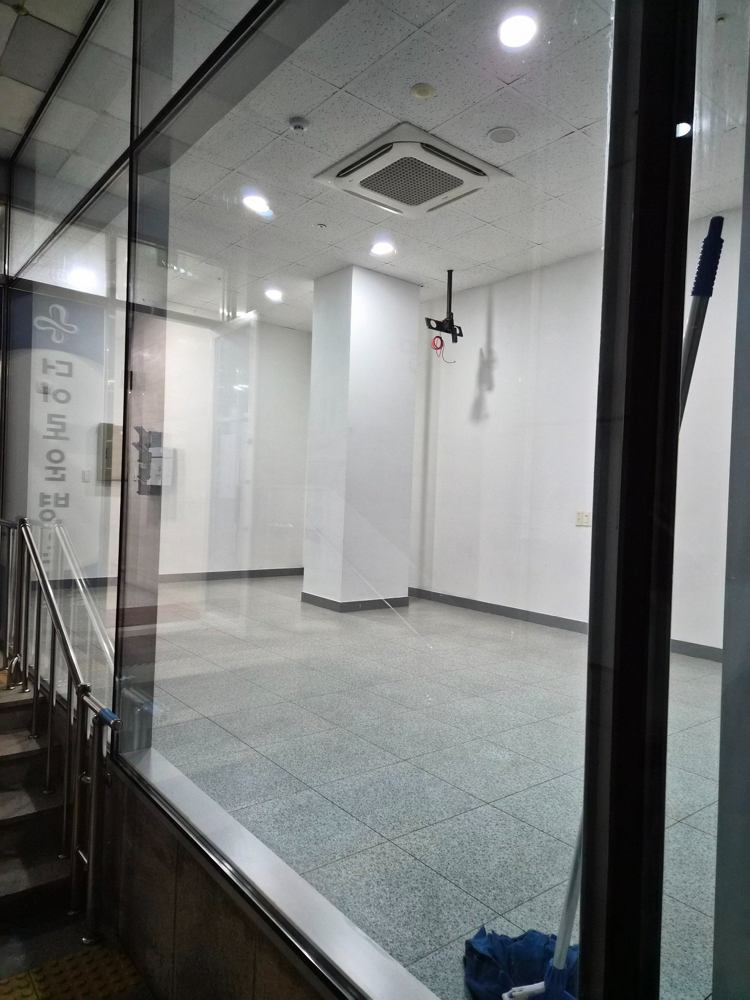
전면 유리 투명도 회복
유리면의 손자국과 얼룩을 정리한 뒤 내부가 훨씬 선명하게 보이는 상태로 마감했습니다. 유리청소는 한 방향으로만 닦기보다 빛 반사를 보면서 남은 자국을 확인해야 합니다. 가장자리와 중앙부를 다시 점검했습니다.

전면창과 출입구 최종 마감
상가 정면에서 바라봤을 때 유리와 출입구 주변이 정돈되어 내부 공간이 깨끗하게 드러납니다. 전면창이 넓은 상가는 유리 상태가 매장 첫인상에 큰 영향을 주기 때문에 얼룩과 프레임 잔여물을 함께 확인하는 것이 중요합니다.
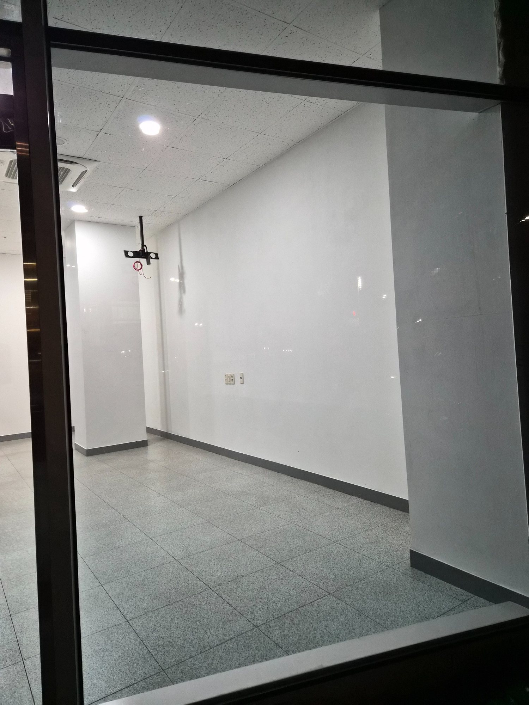
바닥과 벽면 주변 정리
실내 바닥의 먼지와 잔여물을 정리하고 벽 하단과 모서리까지 확인했습니다. 빈 상가나 입점 준비 공간은 가구가 없기 때문에 바닥 오염이 더 직접적으로 보입니다. 전체 동선을 따라 마감 상태를 점검했습니다.
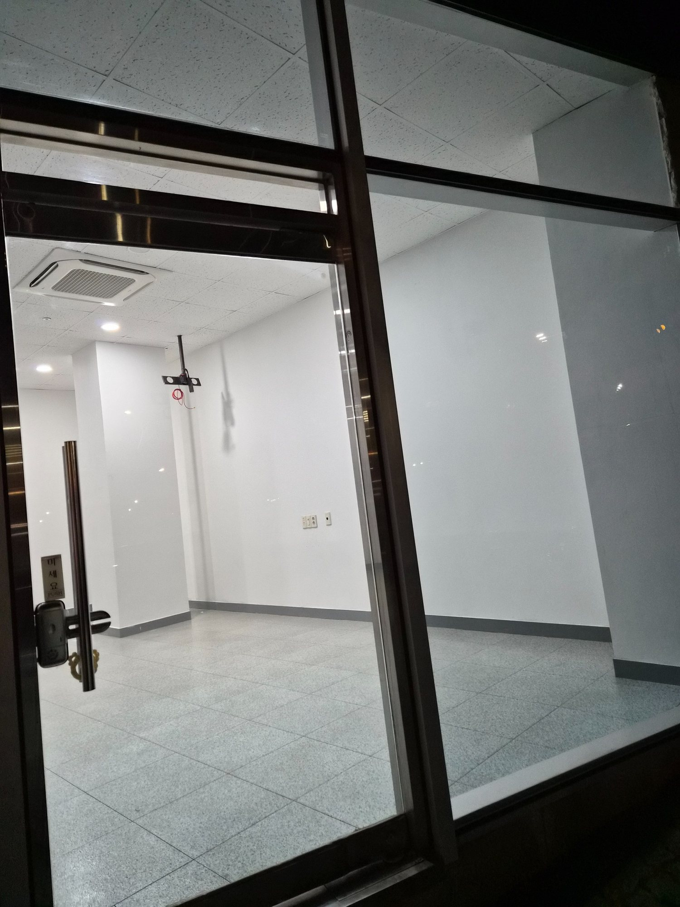
바닥 광택과 타일 줄눈 확인
바닥 표면의 잔먼지와 오염이 줄어 타일 무늬와 줄눈이 또렷하게 보입니다. 출입구는 외부 먼지가 다시 들어오기 쉬워 작업 마지막 단계에서 한 번 더 확인했습니다. 이후 입점이나 영업 준비가 가능한 상태로 정돈했습니다.
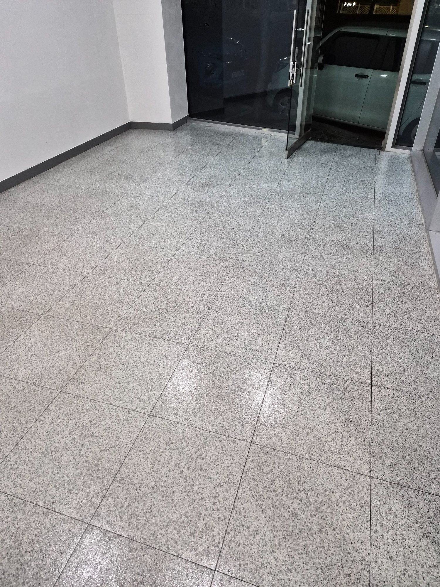
창가 상부와 프레임 마무리
마지막으로 시야 높이보다 높은 유리와 프레임까지 확인했습니다. 넓은 유리창은 아래쪽만 깨끗해도 상부에 먼지나 자국이 남으면 전체가 흐려 보일 수 있습니다. 상하부를 연결해 최종 마감했습니다.
양산 북부동 상가청소 무료 방문견적
상가 규모, 유리 면적, 바닥 상태와 청소 범위를 현장에서 확인한 뒤 필요한 작업을 안내합니다. 양산 북부동을 포함해 물금·증산·중부동·덕계 등 양산 지역 상가청소 상담이 가능합니다.